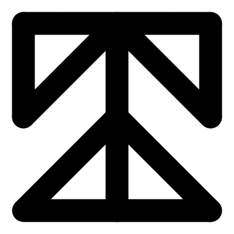
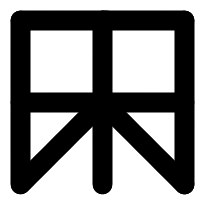
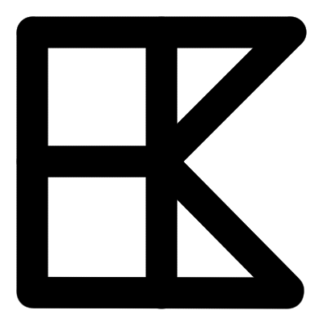

The Savilsh People
The Savilsh People* Not an alphabet!
The Savilsh Abjad

i. Writing Method
The Savilsh writing system isn't an alphabet. Rather, it's an abjad like Arabic or Hebrew. This means that their writing system does not require the vowels to be written, and often times, only the consonants are written while the vowels are inferred. Unlike most modern abjad writing systems, the Savilsh writing system is a pure abjad, meaning there are no optional vowels or vowel diacritics which aid the reader. There are absolutely no written representations of their vowels.
While it can be challenging when two dialects clash, this system of writing has been reaffirmed over the centuries of linguistic evolution by the practical methods by which the Savils write. Instead of chiseling stone, carving wood, or inking paper, they use nails (called "shaang," or [ʃaːŋ]) hammered into a piece of wood to wrap string around them made of different materials depending on which cultural regions of Savil the author originates. The string could be wool, sinew, or rope; it just had to be a fitting width for the dimensions of the 3x3 grid that would contain a single letter. Symbols are created through the patterns created by the string connecting from nail to nail. For example, here are the two symbols that represent "sh" and "ng":
To save space and nails, the letters may be written on top of each other on the same grid, but this is usually saved for really short words or artistic pieces. The standard for writing is to overlap the borders of each 3x3 grid to create a unified string of lines. People who grew up with this system can intuit almost instantly the amount of nails and length of string required for the sentences they want to write.
For word construction, there are different methods depending on the goals of the piece of the writing. If a shopkeeper wants something tidy and appealing to put on a sign, they can name their shop a name that has a perfect square number of consonants such that they can write the grids in a grid themselves. However, if you're documenting information in long sentences, the borders overlap for symbols in a unified words, and then a peg is skipped for the next word.
When it comes to reading direction, it is variable. Different regions have different preferences, but generally, either is consider proper grammar. Everyone who is literate is expected to be able to adapt to whichever direction the words are written.

ii. The Complete Abjad
This is complete abjad of Salvish, comprised of only 22 letters. You'll notice that certain sounds from the phonology chart aren't represented, and that is because preaspirated versions are considered to be in the same category as vowels, so it's information to be inferred. The difference between unaspiration and preaspiration can change meanings of a word, but there are patterns that make it easier to guess which version to use. You can learn more about this in Grammar.
| [m] | [n] | [ŋ] | [p] | [t] | [k] | [ʔ] | [b] | [d] | [g] | [ʦ] |
|---|---|---|---|---|---|---|---|---|---|---|
|  |  |
 |
 |
 |  |
 |
||||
| [ʧ] | [ʤ] | [f] | [s̪] | [s̺] | [ʃ] | [x] | [v] | [ʒ] | [l] | [j] |
 |
 |
 |
 |
 |  |
Certain letters have alternative meanings outside of transcribing sounds, like besides being phonemic, they are also logographic. Even if you are illiterate (which more than half of the population is), everyone is taught to know these symbols.
- This represents a house. Family groups (more on this in Society) will transcribe their name or animal symbol, and then add this symbol at the end to communicate "this is the house of ___." It can be stamped on any building owned by people in that clan to show territory.
- This represents danger. It is used to mark areas that require caution, most oftenly around the territory of a large predatory animal, like the world's equivilant of a cougar, but it can also be used on paths that include steep cliffs or a fast moving river.
- This represents a market. If a building has this on the storefront, it can be assumed that they barter or sell goods, and the next symbol afterwards will represent what goods they have. This is only used in the countryside where literacy for men is very uncommon. A city center where most men are literate will have proper storenames with advertisement.
- Next to , it means animal goods.
- Next to , it means clothing.
- Next to , it means lumber.